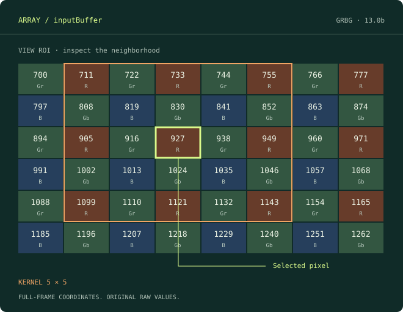

Visual Studio
2017 / 2019 / 2022
일반 설치본 하나로 세 버전을 지원합니다.
ArrayImageViewer.vsix ↓VISUAL STUDIO DEBUGGER EXTENSION
숫자로 나열된 RAW 버퍼를 이미지로 펼치세요.
픽셀 값을 읽고, 주변을 비교하고,
원하는 값이 쓰이는 순간에 멈춥니다.
Visual Studio 2017 · 2019 · 2022 / 2015 전용 설치본

GET STARTED
사용 중인 Visual Studio에 맞는 VSIX를 선택하세요.
일반 설치본 하나로 세 버전을 지원합니다.
ArrayImageViewer.vsix ↓VS 2015에는 별도 호환 설치본을 사용하세요.
VS 2015 전용 VSIX ↓Visual Studio를 종료하고 VSIX를 실행한 뒤 다시 엽니다.
포인터와 크기 변수를 읽을 수 있는 네이티브 C++ 스택 프레임에서 멈춥니다.
Tools → Sensor RAW Array Viewer를 엽니다. 포인터 선택 후 우클릭 메뉴로도 열 수 있습니다.
0.11.57 · 포커스 복원만으로 자동완성을 열지 않고, 팝업 바깥 클릭이 Watch 버튼에 전달되도록 수정했습니다. 릴리즈 노트 ↗
THE WORKFLOW
Frame / Structure / Profiles는 같은 공간에서 전환합니다.
설정 아래 구분선을 드래그해 이미지에 더 많은 공간을 주세요.
Buffer Expression에 inputBuffer 또는 this->m_data를 입력합니다. Frame에서 Width, Height, stride, 자료형과 Q-format을 지정하고 Capture합니다.
Go To X/Y로 위치를 지정하세요. 휠로 확대하면 RAW와 Q 값이 셀 안에 보입니다. Center나 더블클릭으로 픽셀을 화면 중앙에 둡니다.
Watch Go To X/Y는 디버거 실행을 재개해 그 픽셀의 쓰기를 기다립니다. 적중하면 해당 좌표를 중앙에 표시합니다.
TWO ROIS, TWO PURPOSES
View ROI는 읽고 표시할 데이터 범위입니다. Kernel ROI는 선택 픽셀 주변의 검사 사각형입니다. 하나를 바꿔도 다른 하나의 크기를 바꾸지 않습니다.
Frame map을 드래그하면 View ROI를 지정합니다. 큰 선택은 262,144샘플 한도에 맞춰 비율을 유지하며 축소합니다. 읽지 않은 영역은 별도 색으로 구분합니다.
FOLLOW THE WRITE
코드를 수천 번 Step 할 필요 없이, 선택한 한 픽셀의 메모리 쓰기를 네이티브 데이터 중단점으로 감시합니다.
(x, y)입력 좌표를 감시하고 실행 재개
(x + 1, y)줄 끝에서는 (0, y + 1)로 진행
(x, y + 1)X는 유지하고 다음 행을 감시
기본은 한 번 적중한 뒤 자동 해제입니다. Keep armed로 유지하거나 Clear로 제거할 수 있습니다. ROI 전체가 아닌 한 픽셀을 감시하며, 다른 중단점에서 먼저 멈출 수 있습니다. 이미 지나간 쓰기를 되돌려 찾지는 않습니다.
RAW, NOT JUST A PICTURE
일반 정수형 8/16/32-bit 포인터를 지원합니다. OpenCV 타입은 필요하지 않습니다.
표시값은 raw / 2⁸. 저장 자료형과 유효 Q 비트 수를 구분하고, 기본 색 범위는 Q-format의 표현 가능 범위를 사용합니다.
Pixel order는 GRFirst, RFirst, BFirst, GBFirst. Pixel type은 각 사이트를 1×1, 2×2, 4×4로 반복합니다.
전체 프레임 좌표 기준으로 위상을 계산하므로 ROI 이동에도 Bayer 사이트를 유지합니다.
센서 RAW는 BayerRaw, loss·score map은 Gray로. R, G, Gr, Gb, B를 분리해서 확인할 수 있습니다.
Stats는 필요할 때만 열어 N, min, max, mean, SD와 채널별 통계를 확인합니다.
stride는 바이트가 아니라 샘플 수입니다. 기본값은 Width를 따르며, 패딩이 있으면 실제 행 간격을 입력하세요. 패딩은 이미지에서 제외됩니다.
BRING YOUR FRAMEWORK
구조체의 멤버 경로만 등록하면 포인터·폭·높이를 함께 바인딩합니다.
Tools → Options → Array RAW Viewer → Structure Templates에서 Add template로 추가하고 Save합니다.
Structure 탭의 Search root에 this 또는 imageSimulator를 입력하고 Search objects를 누릅니다. 후보를 선택한 뒤 Use captured object로 적용합니다.
루트 자체가 등록 타입이면 Bind current root를 사용하세요. stride는 바인딩된 Width로 설정됩니다.
{
"FormatVersion": 1,
"Templates": [
{
"ClassName": "ImageStream",
"DataAccess": "m_data",
"WidthAccess": "m_width",
"HeightAccess": "m_height"
}
]
}다른 PC나 팀에는 JSON을 공유하고 Options의 Import JSON → Save로 적용하세요. 여러 타입은 Templates 배열에 추가합니다.
에이전트에는 이 규격의 JSON 생성을 요청하세요. 내부 structure-templates-v1.txt는 솔루션별 저장 형식이므로 직접 편집하지 않는 것을 권장합니다.
Search objects는 입력한 루트 안에서 등록 타입을 제한적으로 탐색합니다. 루트가 현재 스택 프레임에서 유효해야 하며, 함수형 접근자는 디버거 평가 비용이나 부작용이 있을 수 있습니다.
COMPARE & TAKE IT WITH YOU
입력·출력을 별도 탭으로 열어 비교합니다. 탭마다 해석 설정, 마지막 읽기 결과, 확대·이동 상태를 유지합니다.
같은 솔루션에서 설정을 다시 쓰거나, 이미지 크기와 ROI 구성을 이름 있는 Profile set으로 저장합니다. 원본 RAW 버퍼를 자동 저장하지는 않습니다.
Ctrl+C로 Kernel 값을 공백·줄바꿈 텍스트로 복사합니다. 전체 / View / Kernel RAW 저장을 지원하며, 16bit 이하는 16bit, 32bit 이하는 32bit로 저장합니다.
BEFORE YOU ASK
VS 2015는 전용 VSIX, VS 2017/2019/2022는 일반 VSIX를 사용하세요. 일반 설치본은 VS 2022 amd64 대상을 포함합니다. 해결되지 않으면 VS 버전·에디션과 VSIXInstaller 로그를 함께 남겨 주세요.
디버거가 중단 상태인지, 선택한 스택 프레임에서 표현식이 유효한지 확인하세요. 대소문자를 구분하고 멤버는 this->m_width처럼 명시합니다. 포인터 목록은 Source → Refresh pointers로 갱신하며 직접 입력도 가능합니다.
Buffer Expression에서 타이핑하거나 Ctrl+Space를 누릅니다. 0.11.57부터 단순 포커스 복원으로는 팝업을 열지 않습니다. Esc로 닫을 수 있습니다.
앞으로 실행될 코드가 해당 주소에 쓰기를 해야 합니다. 이미 쓰기가 끝났거나 다른 중단점이 먼저 적중하면 원하는 위치에서 바로 멈추지 않습니다. 하드웨어 감시 슬롯은 제한되어 있으며, 포인터 평가·감시 해제·View ROI 갱신에도 시간이 듭니다. 실행 대기 중에는 요청을 중복 등록하지 않습니다.
Read options의 Full preview를 사용할 수 있습니다. 큰 프레임은 읽기량 확인이 필요하며, 보통은 Frame map과 제한된 View ROI로 시작하는 편이 빠릅니다. 네이티브 메모리 읽기를 지원하지 않는 엔진은 더 작은 표현식 기반 읽기로 제한됩니다.
저장소의 samples/SensorRawDebuggee를 시작 프로젝트로 설정합니다. 4096×3072 input/output, 패딩 버퍼, Q8.8 score map, Tetra 및 ImageSimulator 구조체 예제를 포함합니다. 확장 프로젝트 자체는 클래스 라이브러리이므로 예제와 구분하세요.
READY TO INSPECT?